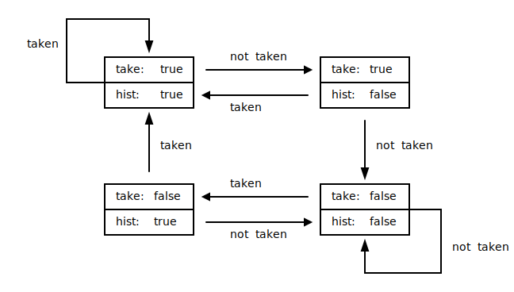

processor.risc_v ≡
The module implements a RISC-V processor core using RV32I base ISA with optional support for MUL* instructions from the “M” standard extension. Its features include support for multiple hardware threads (harts), Memory Mapped IO, instruction fetching from external memory (with an option to implement instruction cache), and support for custom instructions. The microarchitecture deploys a five-stage pipeline and dynamic branch prediction.
Processor pipeline stalls occur only when a handler provided by the Execution Environment doesn’t return results immediately (e.g., when implementing asynchronous Memory Mapped IO load/store or instruction fetching from external memory with multi-cycle read), or if a trap/exception handler stalls. There are no stalls due to late results or data hazards.
The RISC-V core can be configured into various variants that make different area/fmax/performance trade-offs.
Hardware Threads
The core can be configured with 1, 2, 4, or 8 hardware threads (harts). Harts have independent architectural states but are time-multiplexed onto underlying core hardware and may share micro-architecture state (e.g., branch target buffer). All harts share tightly coupled instruction memory, and depending on configuration, may or may not share data memory or external instruction memory.
One Hardware Thread
The 1-hart configuration is designed to balance single-threaded execution performance and small core size.
| Instruction | Cycles |
|---|---|
| Branch predicted (taken or not taken) | 1 |
| Branch mispredicted | 4 |
| Memory load | 2 |
| ECALL, EBREAK | 1+ |
| MUL, MULH, MULHSU, MULHU | 5 |
| All other instructions | 1 |
Two Hardware Threads
The 2-hart configuration provides 2 hardware execution threads and is designed to balance high IPC (instructions per cycle) and single-thread execution performance.
| Instruction | Cycles |
|---|---|
| Branch predicted (taken or not taken) | 1 |
| Branch mispredicted | 3 (or 4 in Fmax optimized configuration) |
| Memory load | 1 |
| ECALL, EBREAK | 1+ |
| MUL, MULH, MULHSU, MULHU | 4 |
| All other instructions | 1 |
Four Hardware Threads
The 4-hart configuration provides 4 hardware execution threads and supports 1-cycle execution of all instructions, including multiplication instructions from the “M” extension.
| Instruction | Cycles |
|---|---|
| Branch predicted (taken or not taken) | 1 |
| Branch mispredicted | 2 (or 3 in Fmax optimized configuration) |
| Memory load | 1 |
| ECALL, EBREAK | 1+ |
| MUL, MULH, MULHSU, MULHU | 1 |
| All other instructions | 1 |
Eight Hardware Threads
The 8-hart configuration provides 8 hardware execution threads with an average performance of 1 instruction per cycle. This configuration is designed for highly parallel workloads that need maximum aggregate performance but can tolerate lower per-thread throughput.
| Instruction | Cycles |
|---|---|
| Branch predicted (taken or not taken) | 1 |
| Branch mispredicted | 1 |
| Memory load | 1 |
| ECALL, EBREAK | 1+ |
| MUL, MULH, MULHSU, MULHU | 1 |
| All other instructions | 1 |
Memory Map
Memory map can be controlled using RISC_V template
parameters. In the default configuration, instruction memory starts at
address 0, and separate data memory for each hardware thread follows
immediately after instruction memory, e.g.:
RISC_V<2, 0x1000, 0x2000> core;
The core implements fast unaligned memory access in hardware, and there is no benefit to compile programs to force only aligned access (e.g., using gcc strict-align flag).
All memory and MMIO addresses in the interfaces between the core and the execution environment are byte-aligned and all sizes are in bytes, unless explicitly specified otherwise.
Extensibility
The core can be customized via callbacks provided by the Execution Environment to handle Memory Mapped IO, instruction fetching from external memory, system traps and exceptions, decoding and execution of custom instructions, and dynamic instruction tracing. All callbacks have default values and need to be overridden only when a particular functionality is enabled.
Callbacks can be implemented as regular inline functions or fixed latency extern functions implemented in Verilog.
Branch Prediction
The RISC-V core implements dynamic branch prediction using a 2-bit Branch Target Buffer.
Size of BTB can be configured via BTB_SIZE
parameter.
template < auto HARTS, auto IMEM_LENGTH, auto DMEM_LENGTH, auto MMIO_LENGTH = 0, auto IMEM_ORIGIN = 0, auto DMEM_ORIGIN = ((IMEM_ORIGIN + IMEM_LENGTH) << 2), auto MMIO_ORIGIN = (DMEM_ORIGIN + DMEM_LENGTH), auto IMEM_TCM_SIZE = IMEM_LENGTH, template <typename, auto> typename DataMemory = memory_norep, auto EXTENSIONS = Extension::None, auto CONFIG = Optimize::Area, Base ISA = Base::RV32I, auto BTB_SIZE = 1024, template <typename, auto> typename InstrMemory = memory_init > class RISC_V §source
Class template implementing RISC-V processor core.
Examples
A simple 1-hart core with 8KB of data and 64KB of instruction tightly coupled memory (TCM).
import processor.risc_v
const auto HARTS = 1;
const auto IMEM_LENGTH = 0x4000;
const auto DMEM_LENGTH = 0x2000;
RISC_V<1, IMEM_LENGTH DMEM_LENGTH> core;By default the data TCM is implemented using simple dual-port memory,
and the methods that expose DMEM access to the Execution Environment use
the same read/write ports as the core. In this configuration, access to
data TCM is safe only when the core is not running. Data TCM can be
configured to use quad-port memory (on devices that support it) using
the Memory template argument. In this configuration, the
Execution Environment can read and write data memory concurrently with
the core. Note that concurrent writes to the same address are still
undefined. The Execution Environment may have at most one call-site for
a DMEM read method and one for a DMEM write method.
import processor.risc_v
const auto HARTS = 1;
const auto IMEM_LENGTH = 0x4000;
const auto DMEM_LENGTH = 0x2000;
const auto MMIO_LENGTH = 0x0;
template <typename T, auto N>
using memory_quad_port = [[memory, quad_port]] T[N];
RISC_V<
HARTS,
IMEM_LENGTH,
DMEM_LENGTH,
MMIO_LENGTH,
0,
(IMEM_LENGTH << 2),
0,
IMEM_LENGTH,
memory_quad_port> core;Parameters
-
auto HARTSNumber of hardware threads (harts), must be a power of 2.
-
auto IMEM_LENGTHLength of instruction memory address space in 32-bit words.
-
auto DMEM_LENGTHLength of data memory in bytes. By default the value specifies length of per-hart data memory. If
Option::HartsShareDMEMbit ofCONFIGparameter is set, the value specifies total length of data memory shared by all harts. In multi-hart configurationDMEM_LENGTHmust be a power of 2 unless shared DMEM is used. -
auto MMIO_LENGTH = 0
Length of Memory Mapped IO address space in bytes. The default value is
0which disables MMIO support. -
auto IMEM_ORIGIN = 0
Start address of address space mapped to instruction memory in 32-bit words.
-
auto DMEM_ORIGIN = ((IMEM_ORIGIN + IMEM_LENGTH) << 2)
Start address of address space mapped to data memory. By default data memory starts right after instruction memory.
-
auto MMIO_ORIGIN = (DMEM_ORIGIN + DMEM_LENGTH)Beginning address of Memory Mapped IO address space. By default memory mapped IO starts right after data memory.
-
auto IMEM_TCM_SIZE = IMEM_LENGTHSize in 32-bit words of tightly coupled instruction memory (TCM) instantiated by the core. The default value is equal to
IMEM_LENGTH, which means that all of the instruction address space is mapped to the internal TCM. If the specified value is less than theIMEM_LENGTH, the reminder of instruction memory address space is handled byexternal_fetchcallback. -
template <typename, auto> typename DataMemory = memory_norep
Type alias template providing underlying implementation of data memory. The default is
mmemory_norep. -
auto EXTENSIONS = Extension::None
ISA extensions implemented by the core. The default is
Extension::None. The only other valid value isExtension::M -
auto CONFIG = Optimize::Area
Configuration flags. The default is
Optimize::Area. Possible optimization flags areOptimize::Area,Optimize::Fmax(mutually exclusive). Other supported flags are defined by theOptionenum. -
Base ISA = Base::RV32I
Specifies the base ISA. The default and the only supported value at this time is
Base::RV32I -
auto BTB_SIZE = 1024
Number of entries in Branch Target Buffer. The default of 1024 is usually a good value for BTB realized as block RAM. If using block RAM is undesirable, a small BTB, for example with 8 entries, can give good results. When BTB_SIZE is less than 1024, the BTB is implemented as an array. The value must be a power of 2.
-
template <typename, auto> typename InstrMemory = memory_init
Type alias template providing underlying implementation of instruction memory. The default is
mmemory_initwhich instantiates memory with initialization. Specifyingmemoryinstead may be useful when initialization is not desirable, for example to allow using memories such as Xilinx UltraRAM which don’t support initialization. Note that when using memory without initialization, the execution environment must make sure that that any area of IMEM the core might read from is initialized before starting the core. Failure to do so will likely result in asserts during simulation due to undefined data being read from IMEM.
Aliases
-
using system_trap_t = RISC_V::core_t::system_trap_t §source
-
using trace_t = RISC_V::core_t::trace_t §source
-
using mmio_access_t = RISC_V::core_t::mmio_access_t §source
-
using mmio_load_t = RISC_V::core_t::mmio_load_t §source
-
using mmio_store_t = RISC_V::core_t::mmio_store_t §source
-
using external_fetch_t = RISC_V::core_t::external_fetch_t §source
-
using custom_decode_t = RISC_V::core_t::custom_decode_t §source
-
using custom_execute_t = RISC_V::core_t::custom_execute_t §source
-
using imem_addr_t = RISC_V::core_t::imem_addr_t §source
-
using dmem_addr_t = RISC_V::core_t::dmem_addr_t §source
-
using register_index_t = RISC_V::core_t::register_index_t §source
-
using int_t = RISC_V::core_t::int_t §source
-
using uint_t = RISC_V::core_t::uint_t §source
-
using hart_index_t = RISC_V::core_t::hart_index_t §source
Callbacks and Fields
-
RISC_V::system_trap_t system_trap = RISC_V::core.default_system_trap §source
Callback to handle exceptions and traps. The default callback asserts in simulation on any system exception.
-
RISC_V::trace_t trace = RISC_V::core.default_trace §source
Dynamic instruction trace callback. The default callback is no-op. The
print_tracemethod can be used to print disassembled instructions to the log stream. -
RISC_V::mmio_access_t mmio_access = RISC_V::core.default_mmio_access §source
The callback handles memory load/store within MMIO address space. If the access operation completes immediately, the
is_validof the returned result should be set to true. For load access thevalueof the returned result is the result of the load. For store access thevalueof the returned result is ignored. If the operation will complete asynchronously theis_validof the returned result should be set to false, and execution environment should indicate completion of load/store by calling themmio_load_resultormmio_store_completedmethod respectively. -
RISC_V::mmio_load_t mmio_load = RISC_V::core.default_mmio_load §source
The callback handles memory loads within MMIO address space. The callback result is
optional<int_t>. The callback may return result immediately, settingis_validto true, or asynchronously by calling themmio_load_resultmethod later. By default the callback asserts in simulation. The callbacks is used only whenmmio_accesscallback uses the default implementation. -
RISC_V::mmio_store_t mmio_store = RISC_V::core.default_mmio_store §source
The callback handles memory stores within MMIO address space. The callback result is
bool. The callback should returntrueif the program running on the core can consider the store as committed, orfalseif the store should be considered as pending. In the latter case, the hart that made the request stalls until the core’s methodmmio_store_completedis called. By default the callback asserts in simulation. The callbacks is used only whenmmio_accesscallback uses the default implementation. -
RISC_V::external_fetch_t external_fetch = RISC_V::core.default_external_fetch §source
Optional external instruction memory support is enabled by specifying
IMEM_TCM_SIZEthat is less thanIMEM_LENGTH. In this case instruction fetch for addresses aboveIMEM_TCM_SIZEare directed to the Execution Environment via this callback. The default callback asserts in simulation. -
RISC_V::custom_decode_t custom_decode = RISC_V::core.default_custom_decode §source
The
custom_decodecallback is called for instructions using one of the four major opcodes reserved for custom extensions:RVG::custom_0 RVG::custom_1 RVG::custom_2 RVG::custom_3The callback should return one of the standard encoding formats used the custom instruction, or
Format::Invalidif the major opcode is not implemented by the custom extension. The default callback decodes all custom instructions as invalid. -
RISC_V::custom_execute_t custom_execute = RISC_V::core.default_custom_execute §source
Callback is called to execute a custom instruction. The result returned by the callback is written to the destination register if the instruction encoding format specifies one. The result is ignored for formats
BandS, or when destination register iszero. The default callback is no-op.
Methods
-
inline void start(RISC_V::uint_t[HARTS] pc) §source
-
inline void stop() §source
Request the core to stop. Note that the method doesn’t block until the core has finished running. Use
is_runningmethod to wait for the core to stop. -
inline bool is_running() §source
Returns
trueif the core is running. Can be used to wait for the core to finish running after stop request. -
inline void init_stack_pointers( RISC_V::uint_t stack_start, RISC_V::uint_t stack_size ) §source
Initialize stack pointers. Not necessary if the firmware startup code performs the initialization. When the option
Option::HartsShareDMEMis set then each hart is allocated its own stack of the specified size, with the stack for hart 0 starting at the specified address, and stacks for remaining harts following below it in DMEM address space. -
inline void print_memory_map() §source
Print a diagram of memory address space configuration.
-
inline void print_trace( RISC_V::hart_index_t hid, RISC_V::imem_addr_t addr, RISC_V::uint_t inst, Decoded decoded, optional<RISC_V::int_t> value ) §source
Print dynamic instruction trace. The method can be used to initialize the
tracecallback.Arguments
-
RISC_V::hart_index_t hid
Hart index.
-
RISC_V::imem_addr_t addr
Address of 32-bit instruction word.
-
RISC_V::uint_t inst
Instruction word.
-
Decoded decoded
Decoded instruction. Note that
Decodedis an internal data type and may change w/o notice. -
optional<RISC_V::int_t> value
An optional 32-bit value written by the instruction to the target register.
-
-
inline void external_fetch_result( RISC_V::hart_index_t hid, RISC_V::uint_t addr, RISC_V::uint_t value ) §source
-
inline void mmio_load_result(RISC_V::hart_index_t hid, RISC_V::int_t value) §source
Complete asynchronous load from memory mapped IO.
Arguments
-
RISC_V::hart_index_t hid
Index of the hart that performed the asynchronous load from memory mapped IO.
-
RISC_V::int_t value
Result of memory mapped IO load.
-
-
inline void mmio_store_completed(RISC_V::hart_index_t hid) §source
Complete asynchronous store to memory mapped IO.
Arguments
-
RISC_V::hart_index_t hid
Index of the hart that performed the asynchronous store to memory mapped IO.
-
-
inline void imem_write(RISC_V::uint_t addr, RISC_V::uint_t value) §source
-
inline RISC_V::int_t dmem_read(RISC_V::hart_index_t hid, RISC_V::uint_t addr) §source
Read a 32-bit word from hart’s data memory.
Arguments
-
RISC_V::hart_index_t hid
Hart index.
-
RISC_V::uint_t addr
DMEM byte address to read from.
-
-
inline void dmem_write( RISC_V::hart_index_t hid, RISC_V::uint_t addr, RISC_V::int_t value, count_t<4> size ) §source
-
inline RISC_V::int_t dmem_read_aligned(RISC_V::hart_index_t hid, RISC_V::uint_t addr) §source
Read a 32-bit word from hart’s data memory at a 32-bit aligned address. More resource efficient than
dmem_readwhen unaligned address support is not required.Arguments
-
RISC_V::hart_index_t hid
Hart index.
-
RISC_V::uint_t addr
DMEM byte address to read from. Must be 32-bit aligned.
-
-
inline void dmem_write_aligned( RISC_V::hart_index_t hid, RISC_V::uint_t addr, RISC_V::int_t value ) §source
Write a 32-bit word to hart’s data memory at a 32-bit aligned address. More resource efficient than
dmem_writewhen unaligned address support is not required.